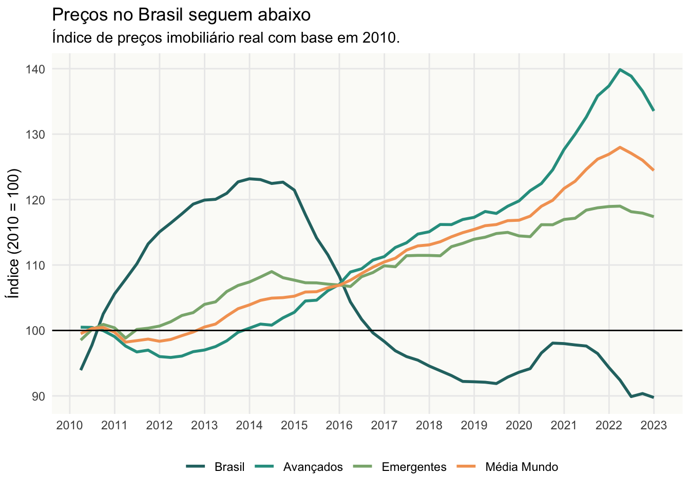
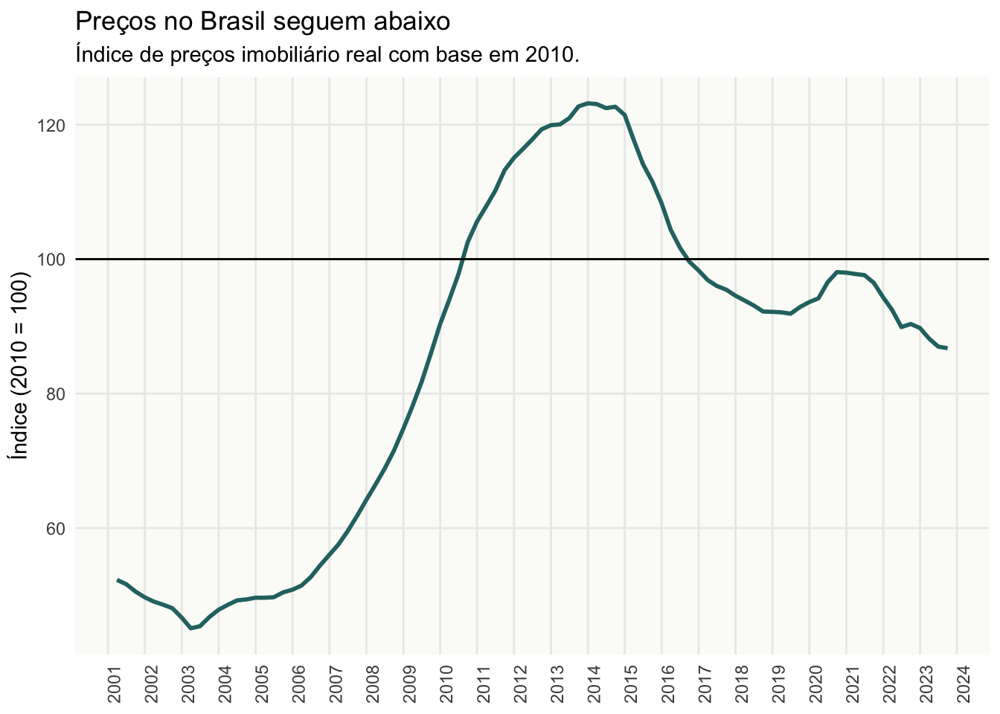
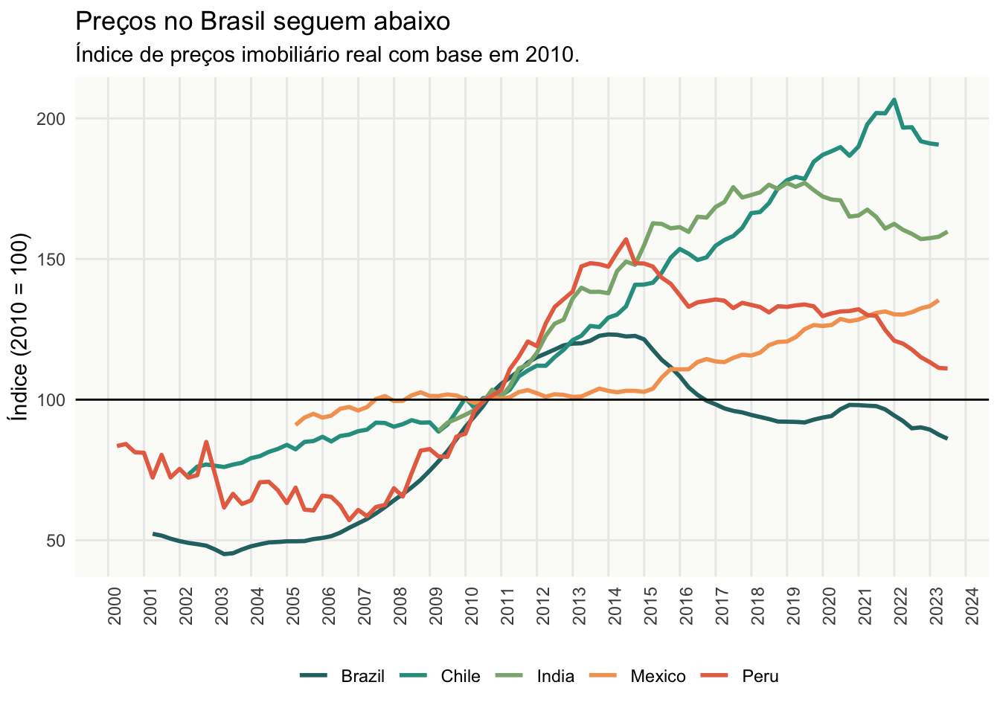

Across most of the developing world, housing is a word followed by either crisis or affordability crisis. Since before the Pandemic, housing prices have far outpaced income …
Simply put, housing affordability is all about how easy it is to buy a house.
There are three key concepts that ground housing affordability:
Housing prices. The inflation-adjusted prices of the available housing stock. This is measured through Residential Property Price Indices.
Credit Conditions. Each country has different credit conditions and financing options for housing …
Family Income.
Existe um senso cada vez mais generalizado de que os imóveis no Brasil estão ficando mais caros. Em termos mais precisos, reclama-se que a acessibilidade financeira aos imóveis está cada vez pior. A acessibilidade financeira é simplesmente o quão fácil ou difícil é de se comprar um imóvel. Para entender melhor isto precisa-se olhar para três variáveis chave:
sale <-get_rppi(category ="sale", stack =TRUE)bis <-get_bis_rppi()bis <- bis %>%mutate(name_country =case_when( reference_area =="Emerging market economies (aggregate)"~"Emergentes", reference_area =="Advanced economies (aggregate)"~"Avançados", reference_area =="World"~"Média Mundo", reference_area =="Brazil"~"Brasil",TRUE~ reference_area ) )rppi <- bis %>%filter( date >=as.Date("2000-01-01"), unit =="Index, 2010 = 100", is_nominal ==FALSE )sel <-c("Brasil", "Avançados", "Emergentes", "Média Mundo")rppi_comp <- rppi %>%filter( name_country %in% sel, date >=as.Date("2010-01-01"), date <as.Date("2023-01-01")) %>%mutate(name_country =factor(name_country, levels = sel) )ggplot(rppi_comp, aes(x = date, y = value)) +geom_line(aes(color = name_country), linewidth =1) +geom_hline(yintercept =100) +scale_x_date(date_breaks ="1 year", date_labels ="%Y") +scale_color_manual(name ="", values = colors) +labs(x =NULL,y ="Índice (2010 = 100)",title ="Preços no Brasil seguem abaixo",subtitle ="Índice de preços imobiliário real com base em 2010." ) + theme_vini

rppi_brasil <- rppi %>%filter(reference_area =="Brazil") %>%na.omit()ggplot(rppi_brasil, aes(x = date, y = value)) +geom_line(linewidth =1, color = colors[1]) +geom_hline(yintercept =100) +scale_x_date(date_breaks ="1 year", date_labels ="%Y") +scale_color_manual(name ="", values = colors) +labs(x =NULL,y ="Índice (2010 = 100)",title ="Preços no Brasil seguem abaixo",subtitle ="Índice de preços imobiliário real com base em 2010." ) + theme_vini +theme(axis.text.x =element_text(angle =90))

sel <-c("Brazil", "Chile", "Mexico", "Peru", "India")vnames <-c("Brazil"="Brasil","Peru"="Peru","Chile"="Chile","Mexico"="México","Russia"="Rússia" )translate_country <-function(x) {if (!any(x %in% vnames)) {return(x) } else {unname(vnames[x]) }}rppi_latam <- rppi %>%filter(reference_area %in% sel)ggplot(rppi_latam, aes(x = date, y = value)) +geom_line(aes(color = reference_area), linewidth =1) +geom_hline(yintercept =100) +scale_x_date(date_breaks ="1 year", date_labels ="%Y") +scale_color_manual(name ="", values = colors) +labs(x =NULL,y ="Índice (2010 = 100)",title ="Preços no Brasil seguem abaixo",subtitle ="Índice de preços imobiliário real com base em 2010." ) + theme_vini +theme(axis.text.x =element_text(angle =90) )
Warning: Removed 70 rows containing missing values or values outside the scale range
(`geom_line()`).

Se aumenta o preço médio dos imóveis, é evidente que fica mais difícil comprar ou alugar um imóvel. É importante lembrar que o preço dos imóveis, contudo, não se comporta como a maior parte dos bens na economia.
A grande maioria das pessoas financia a compra do seu imóvel; assim, a melhora ou piora das condições de financiamento têm impacto considerável sobre a acessibilidade financeira. Taxas de juros menores e prazos de financiamento mais longos permitem que uma família consiga comprar um imóvel mais caro, com o mesmo dinheiro. Em outras palavras, condições de crédito favoráveis aumentam o poder de compra das famílias.
Por fim, a renda das famílias
Sobre o preço dos imóveis
Se aumenta o preço do tomate longa-vida, por exemplo, isto é reflexo da escassez deste produto. Pode ser um efeito sazonal, de safra, ou num caso mais severo mesmo uma quebra de safra. No caso de imóveis existe uma correlação direta entre o preço e qualidade.
Imóveis mais caros são imóveis melhores. Um imóvel com preço mais alto tende a ser maior, melhor localizado, construído com materiais melhores, mais seguros, etc. Assim um aumento no preço médio dos imóveis lançados numa cidade pode estar refletindo um aumento no padrão do imóvel lançado. Isto pode acontecer inclusive por mudanças regulatórias que proíbem o uso de algum material ou que exigem a construção de certas estruturas, em geral, por motivos de segurança.
Por fim, num mercado, a dinâmica dos preços é resultado da interação entre oferta e demanda. Se aumenta a demanda por moradia num bairro, ou numa cidade, o preço - tanto do terreno como do imóvel - tenda a aumentar. Este aumento de demanda